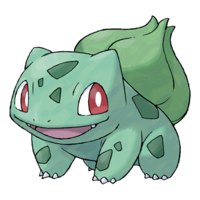
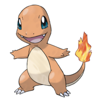
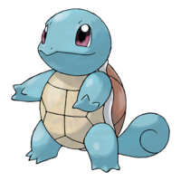

| Bulbasaur |
 |
Bulbasaur (フシギダネ Fushigidane) is a Grass/Poison-type Pokémon introduced in Generation I. It evolves into Ivysaur starting at level 16. It is one of the three Starter Pokémon that can be chosen in the Kanto region. |
| Charmander |
 |
Charmander (ヒトカゲ Hitokage) is a Fire-type Pokémon. It evolves into a Charmeleon starting at level 16. It is one of the three Starter Pokémon that can be chosen in the Kanto region. |
| Squirtle |
 |
Squirtle (ゼニガメ Zenigame) is a Water-type Pokémon introduced in Generation I. It evolves into Wartortle starting at level 16. It is one of the three Starter Pokémon that can be chosen in the Kanto region. |